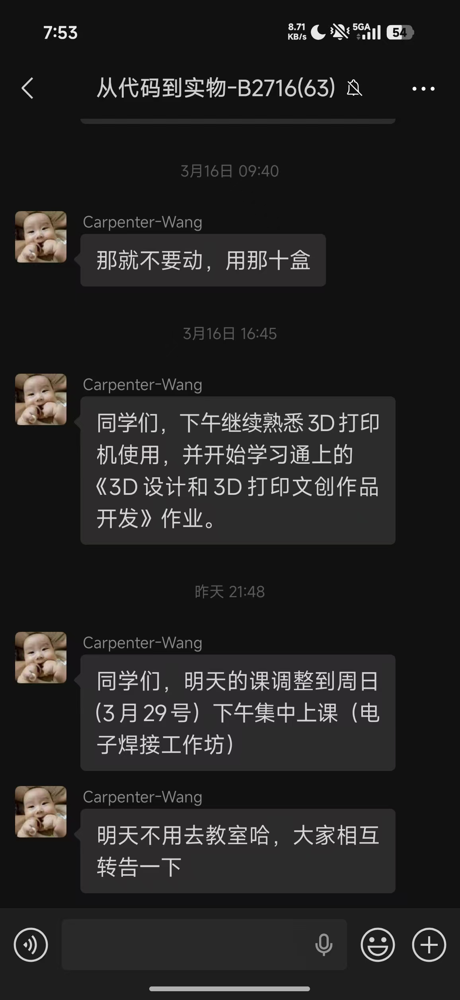
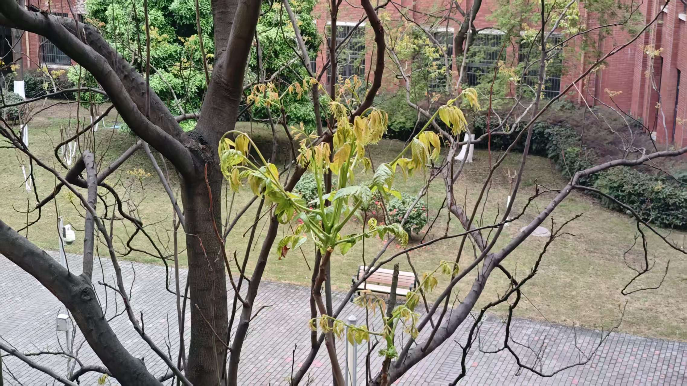
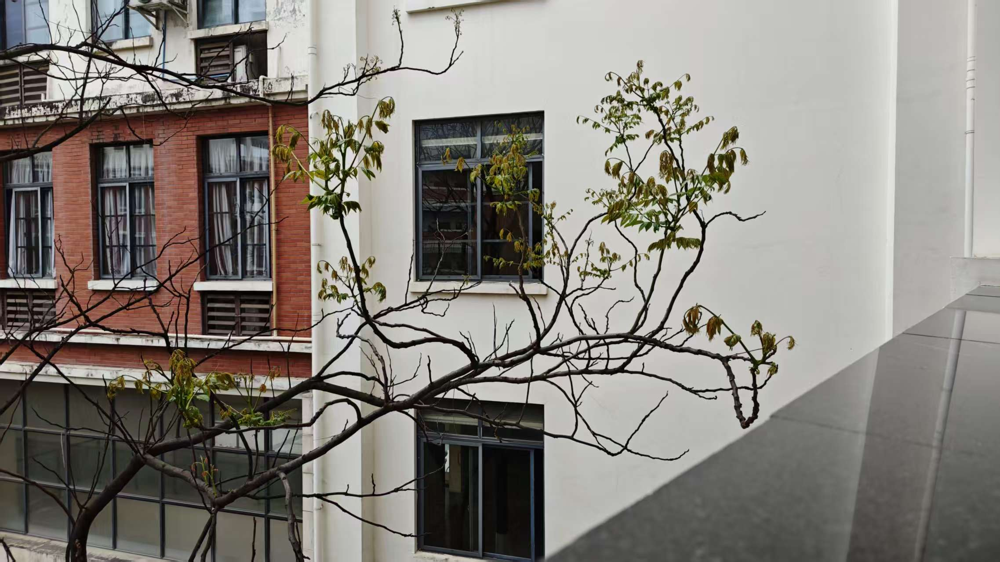

第四周周一，常规开课日，撞上一桩荒诞事。亏得这桩乌龙，我成功的把自己的电动车彻底搞没电了。得到一个朴素而扎实的结论：昨天没看到微信消息。
一、清晨的九教：教室外面一片死寂
一早赶去上代码到实物这门课，推门发现门没开，门口一个人也没有。没记错时间，没走错教室。点开微信群，看见老师昨晚九点发的停课通知。
我只能说，这是典型的没看到消息，不是什么新鲜事，不是意外。非常的符合我的人设. Whatever, I Just Bounce。

图：万恶之源——一条被我完美错过的通知（截图：@LuoryHan）
二、枯木新芽：自然现象，不必附会诗意
白跑一趟。在楼外，看见老树枯枝上冒新芽，拍了两张。视觉反差有意思：老木质变，新芽相变，自然规律，科学现象，没那么多风花雪月。
拍下来。客观事物好像不会有主观情绪，世界按规则运行，但是人却赋予了事情意义，我想人工智能再优化，也无法成为意义本身，优化的方向永远是人定义的。
我想,我们学计算机的，就是要不断地学习，我认为不应该把计算机和“代码”code联系在一起，也不能把计算机和巨大的冯诺依曼体系计算机联系在一起。（这只是表象罢了）何况大家都知道学计算机不是修电脑。我认为，我们这一代计科人，要明白，计算机代表的不应该是电脑，不是写代码，不是任何的这个时代的看似与computer science绑定了的技术，它永远代表的是最先进的生产力，最前沿的科技。而我们要做的，是将这门科学当作科学，学习前沿的科技，而且终生不停歇，这将是理想主义的再一次现身世界，一次浪漫的存活。

图：枯枝新芽，仅为自然相变记录，无额外抒情（摄影：@LuoryHan）

图：环境记录照，客观存档，不搞文艺创作（摄影：@LuoryHan）
三、新生：重新做人
我觉得说“重新做人”，有点偏自嘲了。前三年对自己要求有点宽松。没把全部精力砸在课内，倒也不算亏：社交、人际、强化学习、深度学习、AI技术、科研尝试，该摸的都摸了，算是多元化试错。
但试错该结束了。大三已到尾声，窗口期不多了，也有些迷茫。觉醒，不是感动自己，是清算：止损，纠偏，集中资源，拿剩下的，别计较之前的。
“我来这里不是享乐的，是来磨练自己的。”
四、离散数学：冗余题老，大一遗留的圣遗物
今日只上网络安全、视觉计算两门课，剩下时间全砸在离散数学上了。冲突选课，自学硬扛，没什么好抱怨的。都是自己选的路，必须要按规则来搞。
第三章习题，说穿了不难，就是老、旧、冗余，书写量巨大，思考量偏低，属于体力活。跟物理理论比，简直是降维打击。但考试要考，作业要交，只能按标准输出。抱怨偷懒都是空话，完成任务才是第一。
五、夜跑：对自己狠，是进社会前最低成本的试错
中午食堂吃的，晚上一碗泡面解决。感觉饿了，直接去操场：三公里六圈，练了会上肢力量。对自己一条要求：怎么狠怎么来。
来上学不是度假。乐趣可以暂时封存，问题必须逐个解决，只要干不死，就往死里干。干就完了兄弟们。拳击要捡回来，一方面是为了恢复身体控制力与执行力以及自律，一方面是我对自己的基本要求。
图：夜跑照明，物理空间与精神状态同步点亮（摄影：@LuoryHan）
什么享受、什么放松。现阶段的核心任务是解决问题，我需要什么，就去做什么，只要还活着，就还有做事的希望。在我没死之前，我绝对不会停下来。想那么多没用，动起来，比什么都强。
六、回望高三：单目标优化 vs 多目标决策
跑着步就想起高三，那时候很自律，也很快乐，不觉得痛苦。也许高三是单目标优化问题，路径唯一，梯度清晰，只要执行就行。
大学是多目标决策，维度爆炸，约束模糊，自然容易迷茫。不是变弱了，是问题复杂度升级了。
怀念归怀念，不必纠结，管他这那的，适应新环境，干就完了。至于未来怎么走，先把眼前的事做完。不是来找路，是得要自己凿出一条路来。遇山开山，遇水架桥，神挡杀神，佛挡杀佛，我就不相信，除非我死了，世界上有跨不过的坎，人有办不成的事。